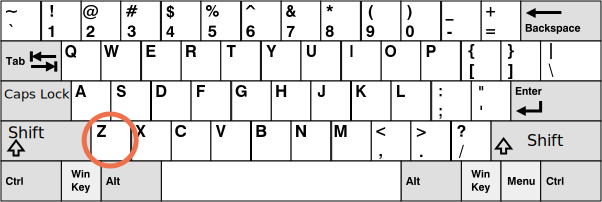

在我们开始学习键盘的相关内容之前，请注意，在现代设备上，还有其他“输入内容”的方法。例如，人们使用语音识别（尤其是在移动端设备上）或用鼠标复制/粘贴。
因此，如果我们想要跟踪 <input> 字段中的所有输入，那么键盘事件是不够的。无论如何，还需要一个名为 input 的事件来跟踪 <input> 字段中的更改。对于这样的任务来说，这可能是一个更好的选择。稍后我们将在 info:events-change-input 一章中介绍它们。
当我们想要处理键盘行为时，应该使用键盘事件（虚拟键盘也算）。例如，对方向键 key:Up 和 key:Down 或热键（包括按键的组合）作出反应。
为了更好地理解键盘事件，你可以使用下面这个 [测试台](sandbox:keyboard-dump)。为了更好地理解键盘事件，你可以使用下面这个测试台。
在文本区域中尝试使用不同的组合键。
[codetabs src="keyboard-dump" height=480]当一个按键被按下时，会触发 keydown 事件，而当按键被释放时，会触发 keyup 事件。
事件对象的 key 属性允许获取字符，而事件对象的 code 属性则允许获取“物理按键代码”。
例如，同一个按键 key:Z，可以与或不与 Shift 一起按下。我们会得到两个不同的字符：小写的 z 和大写的 Z。
event.key 正是这个字符，并且它将是不同的。但是，event.code 是相同的：
| Key | event.key |
event.code |
|---|---|---|
key:Z |
z（小写） |
KeyZ |
key:Shift+Z |
Z（大写） |
KeyZ |
如果用户使用不同的语言，那么切换到另一种语言将产生完全不同的字符，而不是 "Z"。它将成为 event.key 的值，而 event.code 则始终都是一样的："KeyZ"。
每个按键的代码都取决于该按键在键盘上的位置。[UI 事件代码规范](https://www.w3.org/TR/uievents-code/) 中描述了按键代码。
例如：
- 字符键的代码为 `"Key<letter>"`：`"KeyA"`，`"KeyB"` 等。
- 数字键的代码为：`"Digit<number>"`：`"Digit0"`，`"Digit1"` 等。
- 特殊按键的代码为按键的名字：`"Enter"`，`"Backspace"`，`"Tab"` 等。
有几种广泛应用的键盘布局，该规范给出了每种布局的按键代码。
有关更多按键代码，请参见 [规范的字母数字部分](https://www.w3.org/TR/uievents-code/#key-alphanumeric-section)，或者只需在上面的 [测试台](#keyboard-test-stand) 中按下一个按键。"大小写敏感：\"KeyZ\"，不是 \"keyZ\""
这是显而易见的，但人们仍会搞错。
请规避错误类型：它是 KeyZ，而不是 keyZ。像 event.code=="keyZ" 这样的检查不起作用："Key" 的首字母必须大写。
如果按键没有给出任何字符呢？例如，`key:Shift` 或 `key:F1` 或其他。对于这些按键，它们的 `event.key` 与 `event.code` 大致相同：
| Key | `event.key` | `event.code` |
|--------------|-------------|--------------|
| `key:F1` |`F1` |`F1` |
| `key:Backspace` |`Backspace` |`Backspace` |
| `key:Shift`|`Shift` |`ShiftRight` 或 `ShiftLeft` |
请注意，`event.code` 准确地标明了哪个键被按下了。例如，大多数键盘有两个 `key:Shift` 键，一个在左边，一个在右边。`event.code` 会准确地告诉我们按下了哪个键，而 `event.key` 对按键的“含义”负责：它是什么（一个 "Shift"）。
假设，我们要处理一个热键：`key:Ctrl+Z`（或 Mac 上的 `key:Cmd+Z`）。大多数文本编辑器将“撤销”行为挂在其上。我们可以在 `keydown` 上设置一个监听器，并检查哪个键被按下了。
这里有个难题：在这样的监听器中，我们应该检查 `event.key` 的值还是 `event.code` 的值？
一方面，`event.key` 的值是一个字符，它随语言而改变。如果访问者在 OS 中使用多种语言，并在它们之间进行切换，那么相同的按键将给出不同的字符。因此检查 `event.code` 会更好，因为它总是相同的。
像这样：
```js
document.addEventListener('keydown', function(event) {
if (event.code == 'KeyZ' && (event.ctrlKey || event.metaKey)) {
alert('Undo!')
}
});另一方面，event.code 有一个问题。对于不同的键盘布局，相同的按键可能会具有不同的字符。
例如，下面是美式布局（"QWERTY"）和德式布局（"QWERTZ"）—— 来自 Wikipedia：

对于同一个按键，美式布局为 "Z"，而德式布局为 "Y"（字母被替换了）。
从字面上看，对于使用德式布局键盘的人来说，但他们按下 key:Y 时，event.code 将等于 KeyZ。
如果我们在代码中检查 event.code == 'KeyZ'，那么对于使用德式布局键盘的人来说，当他们按下 key:Y 时，这个测试就通过了。
听起来确实很怪，但事实确实如此。规范 中明确提到了这种行为。
因此，event.code 可能由于意外的键盘布局而与错误的字符进行了匹配。不同键盘布局中的相同字母可能会映射到不同的物理键，从而导致了它们有不同的代码。幸运的是，这种情况只发生在几个代码上，例如 keyA，keyQ，keyZ（我们已经看到了），而对于诸如 Shift 这样的特殊按键没有发生这种情况。你可以在 规范 中找到该列表。
为了可靠地跟踪与受键盘布局影响的字符，使用 event.key 可能是一个更好的方式。
另一方面，event.code 的好处是，即使访问者更改了语言，绑定到物理键位置的 event.code 会始终保持不变。因此，即使在切换了语言的情况下，依赖于它的热键也能正常工作。
我们想要处理与布局有关的按键？那么 event.key 是我们必选的方式。
或者我们希望一个热键即使在切换了语言后，仍能正常使用？那么 event.code 可能会更好。
如果按下一个键足够长的时间，它就会开始“自动重复”：keydown 会被一次又一次地触发，然后当按键被释放时，我们最终会得到 keyup。因此，有很多 keydown 却只有一个 keyup 是很正常的。
对于由自动重复触发的事件，event 对象的 event.repeat 属性被设置为 true。
默认行为各不相同，因为键盘可能会启动许多可能的东西。
例如：
key:Delete 键）。key:PageDown 键）。key:Ctrl+S）阻止对 keydown 的默认行为可以取消大多数的行为，但基于 OS 的特殊按键除外。例如，在 Windows 中，key:Alt+F4 会关闭当前浏览器窗口。并且无法通过在 JavaScript 中阻止默认行为来阻止它。
例如，下面的这个 <input> 期望输入的内容为一个电话号码，因此它不会接受除数字，+，() 和 - 以外的按键：
<script>
function checkPhoneKey(key) {
return (key >= '0' && key <= '9') || key == '+' || key == '(' || key == ')' || key == '-';
}
</script>
<input onkeydown="return checkPhoneKey(event.key)" placeholder="Phone, please" type="tel">请注意，像 key:Backspace，key:Left，key:Right，key:Ctrl+V 这样的特殊按键在输入中无效。这是严格过滤器 checkPhoneKey 的副作用。
让我们将过滤条件放松一下：
<script>
function checkPhoneKey(key) {
return (key >= '0' && key <= '9') || key == '+' || key == '(' || key == ')' || key == '-' ||
key == 'ArrowLeft' || key == 'ArrowRight' || key == 'Delete' || key == 'Backspace';
}
</script>
<input onkeydown="return checkPhoneKey(event.key)" placeholder="Phone, please" type="tel">现在方向键和删除键都能正常使用了。
……但我们仍然可以使用鼠标右键单击 + 粘贴来输入任何内容。因此，这个过滤器并不是 100% 可靠。我们可以让它就这样吧，因为大多数情况下它是有效的。或者，另一种方式是跟踪 input 事件 —— 在任何修改后触发。这样我们就可以检查新值，并在其无效时高亮/修改它。
过去曾经有一个 keypress 事件，还有事件对象的 keyCode、charCode 和 which 属性。
大多数浏览器对它们都存在兼容性问题，以致使该规范的开发者不得不弃用它们并创建新的现代的事件（本文上面所讲的这些事件），除此之外别无选择。旧的代码仍然有效，因为浏览器还在支持它们，但现在完全没必要再使用它们。
按一个按键总是会产生一个键盘事件，无论是符号键，还是例如 key:Shift 或 key:Ctrl 等特殊按键。唯一的例外是有时会出现在笔记本电脑的键盘上的 key:Fn 键。它没有键盘事件，因为它通常是被在比 OS 更低的级别上实现的。
键盘事件：
keydown —— 在按下键时（如果长按按键，则将自动重复），keyup —— 释放按键时。键盘事件的主要属性：
code —— “按键代码”（"KeyA"，"ArrowLeft" 等），特定于键盘上按键的物理位置。key —— 字符（"A"，"a" 等），对于非字符（non-character）的按键，通常具有与 code 相同的值。过去，键盘事件有时会被用于跟踪表单字段中的用户输入。这并不可靠，因为输入可能来自各种来源。我们有 input 和 change 事件来处理任何输入（稍后我们会在 info:events-change-input 一章中进行介绍）。它们在任何类型的输入（包括复制粘贴或语音识别）后触发。
当我们真的想要键盘时，我们应该使用键盘事件。例如，对热键或特殊键作出反应。